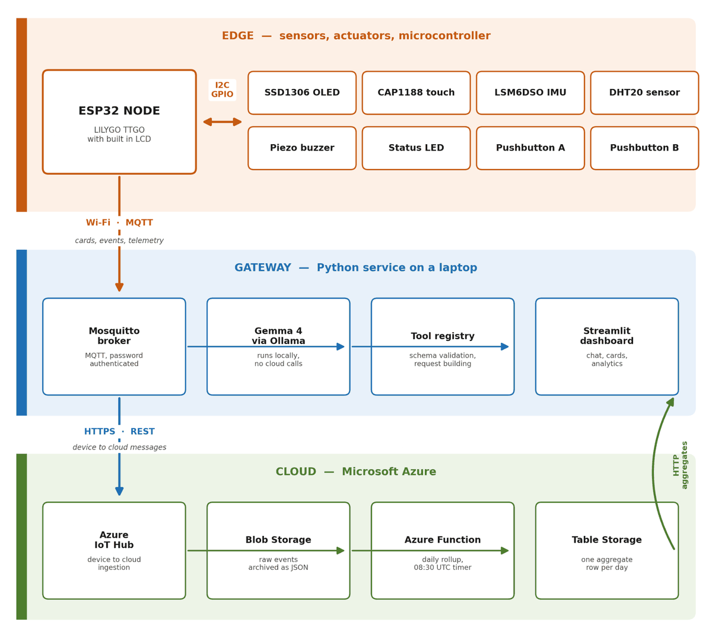

Briefly
IoT AI briefing station


An ESP32 device that reads you the morning without handing you a phone. I'm leading a team of two.
Why it matters
- The alarm keeps its own time, so a dead router can't make you sleep through it.
- Summaries are generated on your own network, so nothing about your morning leaves the house.
What I did
- Wrote C++ firmware around FreeRTOS tasks so the alarm keeps its own time when Wi-Fi drops.
- Built a Python MQTT gateway that summarises feeds with a local LLM, keeping personal data on the home network.
- Streamed device telemetry to Azure IoT Hub to chart usage patterns on a live dashboard.
- When
- to present
- Made for
- CS 147, Internet of Things
- Team
- Two people, led by me
- Built with
- C++, FreeRTOS, Python, MQTT, Azure IoT Hub, ESP32